Раскраска ячейки в несколько цветов
Без макросов раскрасить ячейку можно либо в один цвет, либо заданым градиентом в два цвета. При этом еще и условия градиента менять нельзя. Макросы открывают более широкие возможности в раскраске ячейки.
Как это работает?
Даже у макросов возможности не безграничны. Раскраска в несколько цветов осуществляется по тем же самым принципам градиента. Он может быть линейный или "прямоугольный" - когда расширение цвета идет из одной точки (например, из угла или из центра).
Итак, первым делом обнуляем имеющиеся условия на заливку
ActiveCell.Interior.Pattern.Gradient.ColorStops.Clear
Теперь выбираем тип градиента. Допустим нам нужен линейный.
ActiveCell.Interior.Pattern = xlPatternLinearGradient
Основной параметр при линейном градиенте - угол наклона линии:
ActiveCell.Interior..Gradient.Degree = -45
или любой другой угол. Обратите внимание, что угол может быть и отрицательным. Или можо тот же наклон задать через угол, больший 90 градусов (-45 то же самое, что 135 и т.п.).
Если же нам нужен градиент из точки, то:
ActiveCell.Interior.Pattern = xlPatternLinearGradient
Здесь основной параметр - расположение и размер прямоугольника, от которой будет расходиться градиент. Расположение задается в долях от полного размера ячейки:
With ActiveCell.Interior
.Gradient.RectangleLeft = 0.25
.Gradient.RectangleRight = 0.75
.Gradient.RectangleTop = 0.45
.Gradient.RectangleBottom = 0.55
End With
Порядок цветов и сколько пространства ячейки занимает каждый цвет, задается для обоих типов градиентов одинаково и тоже через доли от общего размера ячейки. Фактически задается точка, в которой цвет наиболее яркий и начиная от которой он начинает плавно переходить к тому цвету, который задан следующим. Рассмотрим на примере линейного градиента с вертикальными линиями (угол равен 90). Следующий код:
Sub sub1()
color1 = 6750054
color2 = 16737792
With ActiveCell.Interior
.Pattern = xlPatternLinearGradient
.Gradient.Degree = 90
.Gradient.ColorStops.Clear
End With
ActiveCell.Interior.Gradient.ColorStops.Add(0).Color = color1
ActiveCell.Interior.Gradient.ColorStops.Add(1).Color = color2
End Sub
...раскрасит ячейку вот так:
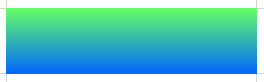
Но если указать, что посередине будет снова зеленый, то от верху и до середины будет чистый цвет, потому что градиент идет из зеленого цвета снова в зеленый. А вот от середины уже пойдет градиент в голубой.
ActiveCell.Interior.Gradient.ColorStops.Add(0).Color = color1
ActiveCell.Interior.Gradient.ColorStops.Add(0.5).Color = color1
ActiveCell.Interior.Gradient.ColorStops.Add(1).Color = color2
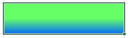
Таким образом мы можем создавать полоски чистого цвета любой ширины.
Теперь добавим третий цвет в нашу заливку:
ActiveCell.Interior.Gradient.ColorStops.Add(0).Color = color1
ActiveCell.Interior.Gradient.ColorStops.Add(0.5).Color = color2
ActiveCell.Interior.Gradient.ColorStops.Add(1).Color = color3
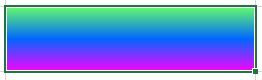
Или, добавив еще пару строк, мы можем сделать полоски в чистых цветах:
ActiveCell.Interior.Gradient.ColorStops.Add(0).Color = color1
ActiveCell.Interior.Gradient.ColorStops.Add(0.33).Color = color1
ActiveCell.Interior.Gradient.ColorStops.Add(0.34).Color = color2
ActiveCell.Interior.Gradient.ColorStops.Add(0.65).Color = color2
ActiveCell.Interior.Gradient.ColorStops.Add(0.66).Color = color3
ActiveCell.Interior.Gradient.ColorStops.Add(1).Color = color3
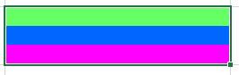
Если цвет на нулевой и на единичной отметке не указан, то используется черный
ActiveCell.Interior.Gradient.ColorStops.Add(0.3).Color = color1
ActiveCell.Interior.Gradient.ColorStops.Add(0.5).Color = color2
ActiveCell.Interior.Gradient.ColorStops.Add(0.7).Color = color3
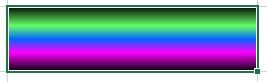
И конечно же не забываем о том, что всегда можно изменить угол наклона прямых!
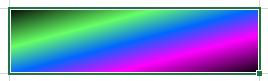
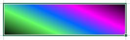
Теперь давайте посмотрим на то, что можно сделать с прямоугольным градиентом. Как уже говорилось выше, мы задаем размер прямоугольника через координаты его границ. Можно выставить все границы на одну точку и цвет будет расходиться от неё:
Sub sub2()
color1 = 6750054
color2 = 16737792
color3 = 16711935
With ActiveCell.Interior
.Pattern = xlPatternRectangularGradient
.Gradient.RectangleLeft = 0
.Gradient.RectangleRight = 0
.Gradient.RectangleTop = 0
.Gradient.RectangleBottom = 0
.Gradient.ColorStops.Clear
End With
ActiveCell.Interior.Gradient.ColorStops.Add(0).Color = color1
ActiveCell.Interior.Gradient.ColorStops.Add(1).Color = color2
End Sub
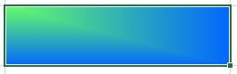
Или мы можем поставить эту точку в любое другое место в ячейке
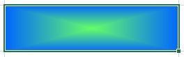
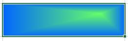
Или мы можем задать размеры прямоугольника побольше и сделать площадь с чистым зеленым цветом побольше:
.Gradient.RectangleLeft = 0.4
.Gradient.RectangleRight = 0.6
.Gradient.RectangleTop = 0.4
.Gradient.RectangleBottom = 0.6
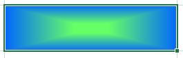
И конечно же, как и с линейным градиентом, мы можем добавлять различные цвета:
Sub sub2()
color1 = 6750054
color2 = 16737792
color3 = 16711935
With ActiveCell.Interior
.Pattern = xlPatternRectangularGradient
.Gradient.RectangleLeft = 0.4
.Gradient.RectangleRight = 0.6
.Gradient.RectangleTop = 0.4
.Gradient.RectangleBottom = 0.6
.Gradient.ColorStops.Clear
End With
ActiveCell.Interior.Gradient.ColorStops.Add(0).Color = color1
ActiveCell.Interior.Gradient.ColorStops.Add(0.5).Color = color2
ActiveCell.Interior.Gradient.ColorStops.Add(1).Color = color3
End Sub
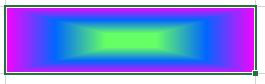
Или вот так
ActiveCell.Interior.Gradient.ColorStops.Add(0.3).Color = color1
ActiveCell.Interior.Gradient.ColorStops.Add(0.5).Color = color2
ActiveCell.Interior.Gradient.ColorStops.Add(0.7).Color = color3
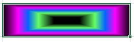